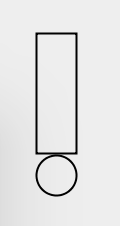
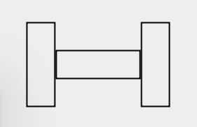
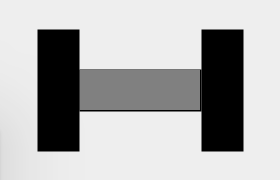
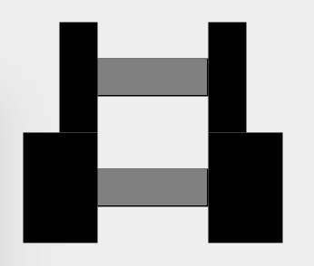
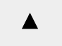
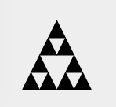
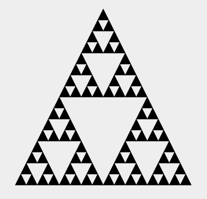
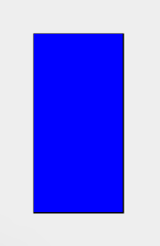

TODO
A scalable programming language is one in which the same concepts can describe small as well as large parts.
Martin Odersky
object Main extends App {
println("Hello world!")
}"The 'Hello world' string" should {
"contain 11 characters" in {
"Hello world" must have size 11
}
}class PingPong extends Actor {
def receive = {
case x => sender ! x
}
}class ExprParser extends RegexParsers {
def factor = "[0-9]+".r | "("~expr~")"
def term = factor~("*" | "/")~factor
def expr = term~("+" | "-")~term
}La façon la plus rapide d'essayer Scala est via la REPL:
$ sbt console
Welcome to Scala 2.11.8 (Java HotSpot(TM) 64-Bit Server VM, Java 1.8.0_65).
Type in expressions for evaluation. Or try :help.
scala>(Vérifier que SBT est installé sur le système.)
Quelle est la réponse à la vie, l'univers et le reste ?
scala> 42
res0: Int = 42Comment est-ce que je m'appelle ?
scala> "Thomas"
res1: String = ThomasCombien font deux et trois ?
scala> 2 + 3
res2: Int = 5Quel est le résultat de la concaténation des chaînes de caractère "Hello " et "world" ?
scala> "Hello " + "world"
res3: String = Hello worldQuelle est la taille du texte "Hello world" ?
scala> "Hello world".size
res4: Int = 11Quel est le rang des nombres de 1 à 10 ?
scala> 1.to(10)
res5: scala.collection.immutable.Range.Inclusive =
Range(1, 2, 3, 4, 5, 6, 7, 8, 9, 10)En réalité, les opérateurs sont juste des méthodes avec des noms symboliques.
scala> 3.+(2)
res6: Int = 5La syntaxe infixe peut aussi être utilisée avec des méthodes non symboliques.
scala> 1 to 10
res7: scala.collection.immutable.Range.Inclusive =
Range(1, 2, 3, 4, 5, 6, 7, 8, 9, 10L'unification des méthodes et des opérateurs rendent le langage plus simple.
abs pour récupérer la valeur absolue de -42.toUpperCase pour transformer le texte Hello world! en majuscules.Comment définir quelque chose de plus haut niveau comme des images ?
scala> Circle(10)
res8: doodle.core.Image.Circle = Circle(10.0)Circle est un constructeur qui prend un paramètre (le rayon) et retourne un objet représentant un cercle.
Afficher une image avec draw:
scala> Rectangle(30, 50).drawMettre en page les images avec beside, above, under :
scala> Rectangle(60, 100) beside Circle(30)
res10: doodle.core.Image = Beside(Rectangle(60.0,100.0),Circle(30.0))
scala> res10.drawToutes les valeurs ont un type
42 a le type Int"Thomas" a le type StringLes types permettent de classifier les valeurs
0 et 42 sont du type IntLes vérifications de type interdisent de combiner les valeurs d'une mauvaise façon
<console>:24: error: type mismatch;
found : String("10")
required: Int
1 to "10"
^L'exécution d'un programme se fait en deux étapes:
La vérification des types se fait lors de la première étape: les erreurs sont détectées rapidement.
Int : un entier signé de 32bitDouble : un flottant de 64bit IEEE754 (e.g. 12.34).Boolean : une valeur booléenne (true et false)String : texteprintln et draw ne retournent pas de valeur significative.UnitUnit: ()Dessiner un point d'exclamation.

Dessiner une haltère.

On peut utiliser la commande fillColor pour remplir une Image avec une couleur.
(Rectangle(30, 80) fillColor Color.black).drawOn a par exemple accès aux couleurs red, blue, green, black, white, gray et brown.
Ajouter de la couleur à notre haltère.

Considérons le programme suivant:
(
(Rectangle(25, 100) fillColor Color.black) beside
(Rectangle(200, 20) fillColor Color.grey) beside
(Rectangle(25, 100) fillColor Color.black)
).drawval weight = Rectangle(25, 100) fillColor
Color.black
val bar = Rectangle(200, 20) fillColor Color.grey
(weight beside bar beside weight).drawLes deux premières lignes sont des définitions de valeur.
=.val weight = Rectangle(25, 100) fillColor
Color.black
val bar = Rectangle(200, 20) fillColor Color.grey
(weight beside bar beside weight).drawLes noms ainsi créés peuvent être utilisés comme toute autre valeur.
Notons que le type est inféré par le compilateur.
val weight = Rectangle(50, 100) fillColor
Color.black
val bar = Rectangle(200, 20) fillColor Color.grey
(weight beside bar beside weight).drawChanger le poids ne demande un changement qu'à un seul endroit.
Dessiner deux haltères une au dessus de l'autre. L'une est légère, l'autre lourde.

Chaque fonctionnalité d'un programme ne doit être implémentée qu'à un seul endroit dans le code.
Aux endroits où des fonctions similaires sont portées par des bouts de code différents, il est souvent bénéfique de les combiner en une seul, en abstrayant les parties variables.
Benjamin C. Pierce. Types and Programming Languages. MIT Press 2002.
val heavyWeight =
Rectangle(30, 100) fillColor Color.black
val smallWeight =
Rectangle(15, 100) fillColor Color.black
val bar = Rectangle(200, 20) fillColor Color.greyIl existe beaucoup de similarités entre heavyWeight et smallWeight.
Il nous faudrait une façon de généraliser cela.
def weight(width: Int) =
Rectangle(width, 100) fillColor Color.black
val heavyWeight = weight(30)
val smallWeight = weight(15)La première ligne est une définition de méthode. Contrairement à la définition de valeurs, elle peut avoir des paramètres.
def weight(width: Int) =
Rectangle(width, 100) fillColor Color.black
val heavyWeight = weight(30)
val smallWeight = weight(15)Les paramètres sont spécifiés entre parenthèses et séparés par des virgules.
Le type des paramètres doit être donné explicitement.
Définir une méthode barbell qui prend en paramètre une image de poids et qui retourne l'image d'une haltère avec ce poids.
Scala nous donne des moyens de:
17, "Hello")Ces moyens d'abstractions et de composition nous donnent un pouvoir d'expression pour généraliser des problèmes et les combiner.
Dessiner 5 haltères les unes au dessus des autres.
val unit = barbell(weight(15))
val barbell1 = unit
val barbell2 = unit above barbell1
val barbell3 = unit above barbell2
val barbell4 = unit above barbell3
val barbell5 = unit above barbell4Pour construire barbellN, on rajoute unit au dessus de barbellN-1.
Pour généraliser cela, on veut exprimer quelque chose de la sorte:
barbellN:
unit si n = 1unit above barbellN-1 sinonval unit = barbell(weight(15))
def barbells(n: Int) =
if (n == 1) unit
else unit above ???On peut écrire une expression conditionnelle en utilisant if et else.
Le résultat de cette expression dépend de la valeur booléenne qu'on lui donne.
Les booléens littéraux sont true et false.
Il existe des opérateurs de comparaisons: 17 == 17, 17 != 42, 17 < 42, ...
Les expressions booléennes peuvent être combinées avec les opérateurs || (disjonction), && (conjonction) et ! (négation).
true || false == !falseval unit = barbell(weight(15))
def barbells(n: Int) =
if (n == 1) unit
else unit above ???val unit = barbell(weight(15))
def barbells(n: Int): Image =
if (n == 1) unit
else unit above barbell(n-1)Le type de retour pour une méthode récursive est obligatoire.
Dans un programme Scala, les valeurs et méthodes doivent être définies dans une définition de niveau supérieure.
object Loops {
def barbells(n: Int): Image = ???
}Ce code contient une définition d'objet qui introduit le nom Loops.
Loops réfère à un objet qui possède une méthode: barbells.
On peut accéder à la méthode barbells en dehors en utilisant la notation par point: Loops.barbells(17).
package core
object Loops { ... }package std
object Lists { ... }Les définitions d'objets peuvent être organisées en packages.
package core
object Loops {
def barbells(n: Int): Image = ???
}package core
object Definition {
Loops.barbells(17)
}Les noms définis dans un package sont visibles dans le code défini dans le même package.
package core
object Loops {
def barbells(n: Int): Image = ???
}package std
object Definition {
core.Loops.barbells(17)
}Les noms définis dans un package ne sont pas visibles dans le code défini dans un autre package. Ils doivent être entièrement qualifiés pour être résolus par le compilateur.
package std
import core.Loops
object Definition {
Loops.barbells(17)
}Le mot clef import permet d'accéder aux noms sans devoir les qualifier.
def barbells(n: Int): Image = {
val unit = barbell(weight(15))
if (n == 1) unit
else unit above barbells(n - 1)
}Les valeurs et méthodes peuvent aussi être définies dans un bloc. Ces définitions ne sont pas accessibles en dehors.
Créer une méthode sierpinski qui prend en paramètre un entier n et qui retourne l'image d'un trianle comme suit:



val foo = 1 + 1
def bar = 1 + 1Quelle est la différence entre foo et bar ?
val foo = 1 + 1
def bar = 1 + 1foo réfère donc à l'expression 2.bar réfère donc à l'expression 1 + 1.def loop: Nothing = loopEst-on certain qu'un programme va se terminer ?
Ecrivons le programme suivant dans un Main.scala:
object Main extends App {
println("Hello world!")
}Compilons-le:
$ scalac Main.scalaLançons-le:
$ scala Main
Hello world!SBT est un outil de build pour des projets Scala.
$ sbt depuis le répertoire du projet pour ouvrir le prompt SBT$ sbt <commande> depuis le répertoire du projet pour lancer une commande SBT
depuis le terminal.run pour lancer le projetconsole pour ouvrir un REPL dans le contexte du projettest pour lancer les tests du projetcompile pour compiler le projet, sans le lancerLe processus de build du projet est défini dans un fichier build.sbt.
Il défini essentiellement les paramètres du projet.
name := "scala-course"
scalaVersion := "2.11.8"
libraryDependencies +=
"com.chuusai" %% "shapeless" % "2.3.0"Les valeurs de paramètre sont des expressions Scala.
Considérons la méthode suivante qui créé une haltère:
def barbell(load: Int, length: Int): Image = {
val weight =
Rectangle(load, 100) fillColor Color.black
val bar =
Rectangle(length, 20) fillColor Color.grey
weight beside bar beside weight
}
val lightBarbell = barbell(10, 180)
val heavyBarbell = barbell(20, 200)On ne peut pas faire grand chose d'autre que de la dessiner.
Comment, par exemple, définir une haltère qui est plus lourde qu'une autre ?
def weigh(barbell: Image): Image = ???Modéliser les haltères comme des images les rend compliqués à manipuler.
def weighLoad(load: Int) = load + 10
def weighLength(length: Int) = length + 20
val lightBarbellLoad = 10
val lightBarbellLength = 180
val heavyBarbellLoad = weighLoad(lightBarbellLoad)
val heavyBarbellLength = weighLength(lightBarbellLength)Il s'agit d'une approche assez compliqué d'utilisation...
case class Barbell(load: Int, length: Int) {
def weigh: Barbell = Barbell(load + 10, length + 20)
}
val lightBarbell = Barbell(10, 180)
val heavyBarbell = lightBarbell.weighCe code contient une définition de case class, qui introduit:
BarbellBarbellcase class Barbell(load: Int, length: Int) {
def weigh: Barbell = Barbell(load + 10, length + 20)
}
val lightBarbell = Barbell(10, 180)
val heavyBarbell = lightBarbell.weighLe type Barbell a trois membres: load, length, et weigh.
lightBarbell et heavyBarbell sont des instances de Barbell.
Implémenter la fonction
def barbellImage(barbell: Barbell): Image = ???Une haltère est un moyen de musculation. Considérons un autre outil:

Un matelas a une largeur et une longueur. Définissons une case class pour lui.
Disons qu'il n'existe dans notre monde que ces deux moyen de se muscler.
Comment écrire une fonction fitnessDeviceImage qui prend en paramètre un de ces moyens en
paramètre et qui retourne une image de celui-ci ?
Comment exprimer le fait qu'un moyen de musculation peut être un matelas, une haltère et rien d'autre ?
sealed trait FitnessDevice
case class Barbell(load: Int, length: Int) extends FitnessDevice
case class Mat(width: Int, length: Int) extends FitnessDeviceCe code contient la définition d'un sealed trait, qui introduit le type FitnessDevice.
Les définitions de case class qui étendent FitnessDevice définissent les variantes possibles
de FitnessDevice.
Comment exprimer le fait qu'un moyen de musculation peut être un matelas, une haltère et rien d'autre ?
sealed trait FitnessDevice
case class Barbell(load: Int, length: Int) extends FitnessDevice
case class Mat(width: Int, length: Int) extends FitnessDeviceLes variantes d'un sealed trait doivent se trouver dans le même fichier source.
Il est possible de manipuler les case classes et les sealed trait en utilisant
le pattern matching.
def name(fitnessDevice: FitnessDevice): String =
fitnessDevice match {
case Barbell(load, length) => "Barbell"
case Mat(width, length) => "Mat"
}Ecrire une fonction fitnessDeviceImage qui prend en paramètre un de ces moyens en
paramètre et qui retourne une image de celui-ci.
La combinaison de case class et de sealed trait donne un moyen pratique de modéliser
l'information en terme de relation est ou a:
Modéliser le domaine suivant en Scala:
Modéliser le domaine suivant en Scala:
Peut-on définir un cours appelé "Programmer en Scala" destiné aux débutants ?
sealed trait DifficultyLevel
case class Beginner() extends DifficultyLevel
case class Intermediate() extends DifficultyLevel
case class Advanced() extends DifficultyLevelSi une case class n'a pas de paramètre, on utilise un case object à la place:
sealed trait DifficultyLevel
case object Beginner extends DifficultyLevel
case object Intermediate extends DifficultyLevel
case object Advanced extends DifficultyLevel